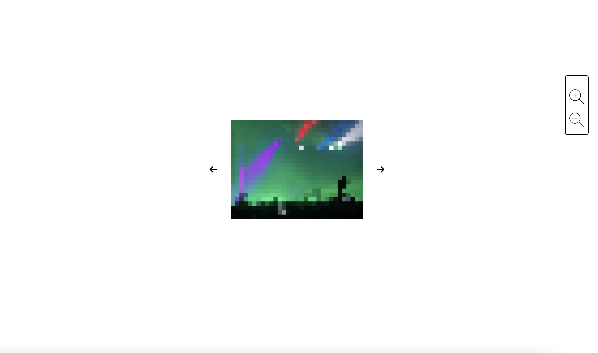
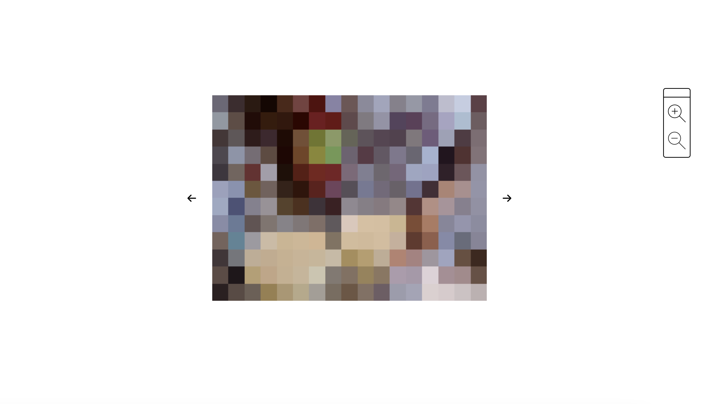
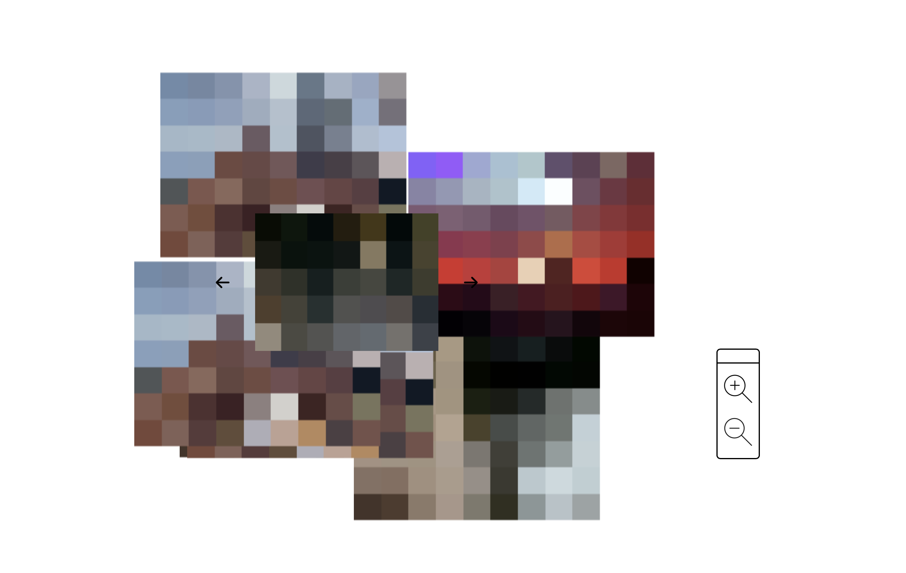

AGAINST ACCESS
TRY ITJavaScript · HTML · CSS
An interactive, web-based video gallery built from personal camera roll footage, examining the tension between intimacy and exposure in digital spaces. Through interactivity and a gradual shift towards abstraction, it turns increased engagement into increased illegibility of the original footage.
Key Features
- Interactive navigation-driven interface
- Real-time pixelation, distortion and displacement
- Progressive image degradation tied to interaction frequency



Design Process
-
Ideation
Researched digital identity, the poor image, and glitch feminism.
Connected it to my own life: how much of myself do I want to share online?
Narrowed it to one tension: being visible without being fully accessible.
-
Building
Built the gallery from my own footage, mixing videos I'd happily share with ones I wouldn't.
From there, went about trying to conceal them. Pixelation first, scattered frames next, and escalating distortion last.
-
Refinement
Kept asking one question: what would the user feel?
Stayed focused on interactivity and subverting expectations.